What is an Incoterm?
An Incoterm (short for International Commercial Term) is one of a set of standardized trade terms published by the International Chamber of Commerce (ICC).
These terms define the responsibilities of buyers and sellers in international trade — covering delivery, transportation costs, insurance, and when risk transfers.
Why are Incoterms Important?
- Clarity and Standardization:Incoterms provide a common set of rules that are widely recognized and understood around the world. This ensures that both parties in a transaction—regardless of their country or legal system—have a clear understanding of their responsibilities, such as who is responsible for shipping, insurance, customs duties, and other costs.
- Risk Management: Incoterms clearly define the point at which the risk of loss or damage to the goods transfers from the seller to the buyer. This is crucial in determining who bears responsibility for the goods at different stages of the shipping process.
- Cost Distribution: Incoterms allocate costs between the buyer and seller. This can include transportation, insurance, duties, and unloading costs. Knowing these responsibilities helps prevent disputes over who should pay for what during the shipment process.
- Legal Protection: By incorporating Incoterms into contracts, parties can avoid misunderstandings and have a clearer path for resolving disputes. Since Incoterms are legally recognized in many countries, they can be used in court or arbitration if a conflict arises.
- Efficiency: Incoterms help streamline the logistics process by ensuring both parties know their obligations from the outset. This reduces delays, confusion, and inefficiencies that might otherwise occur in international shipments
Incoterms are crucial because they establish a clear, standardized framework for the distribution of responsibilities and risks in international trade, making transactions smoother, more efficient, and less prone to disputes.
Incoterms 2020

Focus Term: EXW (EX WORKS)
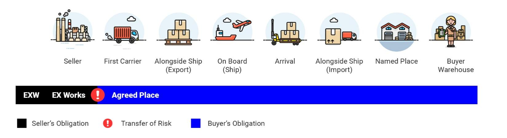
EXW (Ex Works) is one of the Incoterms (International Commercial Terms) defined by the International Chamber of Commerce (ICC) that outlines the responsibilities of both the buyer and seller in an international transaction.
Seller's Responsibility
Under EXW, the seller's responsibility is minimal. The seller's only obligation is to make the goods available for pickup at their premises (or another agreed-upon location, such as a warehouse or factory).
The goods are considered delivered once they are made available, but they are still in the seller's possession until the buyer arranges to pick them up.
Buyer's Responsibility
The buyer assumes most of the responsibility. They must arrange for the transportation of the goods from the seller's location, including:
- Shipping costs
- Insurance
- Customs duties
- Import taxes
The buyer is also responsible for the risk of loss or damage to the goods once they are made available for pickup.
Key Points
- Risk Transfer: Risk transfers from the seller to the buyer as soon as the goods are made available for pickup.
- Transportation and Costs: The buyer handles all aspects of transport, including freight charges, insurance, and customs clearance.
- Delivery Point: The delivery point is usually the seller's premises, factory, or warehouse.
Example
If a seller in New York sells goods to a buyer in Tokyo under EXW terms:
- The seller's responsibility ends once the goods are available at their New York warehouse.
- The buyer is responsible for picking up the goods, arranging transport to Tokyo, and covering all associated costs and risks from that point onward.
Summary
EXW is often seen as the Incoterm with the least seller responsibility, placing almost all of the burden on the buyer.
Focus Term: FCA (FREE CARRIER)
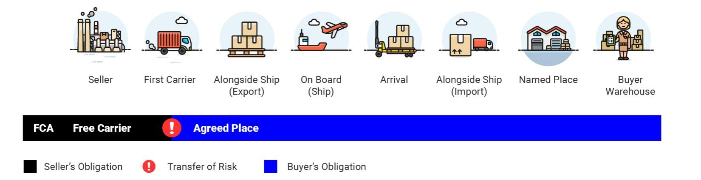
FCA (Free Carrier) is another Incoterm (International Commercial Term) that specifies the responsibilities of both the buyer and seller during the transportation of goods. The seller and buyer share responsibility under FCA, but the main distinction is where the transfer of responsibility and risk occurs.
Seller's Responsibility
- The seller must deliver the goods to a carrier or another person nominated by the buyer at a specified location (e.g., the seller's premises, a warehouse, or a port).
- The seller is responsible for all costs and risks associated with delivering the goods to the carrier at the agreed-upon location.
- The seller must also handle the export customs clearance (if applicable), which includes obtaining export licenses, paying duties, and completing any necessary documentation for export.
Buyer's Responsibility
- Once the goods are handed over to the carrier at the specified location, the buyer assumes responsibility for all further costs and risks.
- The buyer must arrange for the main transport, including freight and insurance, from the point where the goods are handed over to the carrier.
- The buyer is also responsible for the import customs clearance, paying import duties, and handling delivery to the final destination.
Risk Transfer
The risk is transferred from the seller to the buyer as soon as the goods are delivered to the carrier or the agreed-upon location.
Even though the seller arranges for the transport up to that point, the buyer assumes the risk once the goods are handed over to the carrier.
Key Points of FCA
- Delivery Point: The seller delivers the goods to a carrier or a nominated place, which could be the seller's premises, a port, or another agreed location.
- Risk Transfer: The risk of loss or damage to the goods transfers from the seller to the buyer when the goods are handed over to the carrier.
- Responsibility for Transport: The seller arranges the goods to be delivered to the carrier, but the buyer is responsible for the main transportation costs, including freight and insurance.
Example
Imagine a seller in London is selling goods to a buyer in Mumbai under FCA London:
- The seller delivers the goods to the carrier in London (at their warehouse, port, or any other agreed location).
- The buyer arranges for transport from London to Mumbai, including paying for freight, insurance, and import duties.
- The buyer assumes all risks once the goods are handed over to the carrier in London.
Advantages of FCA
- It offers flexibility for both parties, as the delivery location can be agreed upon (not necessarily the seller's premises).
- It helps the buyer by allowing them to control the main transport, giving them more flexibility in terms of routing, insurance, and choosing the carrier.
FCA is commonly used for both containerized and non-containerized shipments, and it is one of the most flexible Incoterms available.
Focus Term: FAS (FREE ALONGSIDE SHIP)
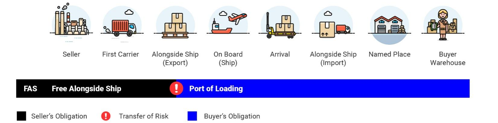
FAS (Free Alongside Ship) is an Incoterm that specifies the responsibilities of both the buyer and seller when goods are shipped by sea or inland waterway. Under FAS, the seller delivers the goods to a location alongside the vessel nominated by the buyer at a specific port of shipment.
Seller's Responsibility
- The seller is responsible for delivering the goods alongside the ship (usually at the quay or dock) at the port of shipment specified in the agreement.
-
The seller must pay for all costs associated with getting the
goods to this location, including:
- Export customs clearance.
- Handling charges at the port.
- Loading the goods onto the ship (if applicable; however, the actual loading is the buyer's responsibility).
- The risk is transferred to the buyer once the goods are placed alongside the vessel, which means the seller's responsibility ends at that point.
Buyer's Responsibility
-
The buyer assumes responsibility for the goods once they are
delivered alongside the vessel. This includes:
- The cost of transporting the goods by sea to the final destination.
- Insurance for the shipment.
- Loading costs (if not already included by the seller).
- Import customs clearance and duties at the destination port.
- Any additional transport beyond the arrival port.
- The buyer also assumes the risk of loss or damage to the goods from the moment they are placed alongside the ship.
Risk Transfer
The risk transfers from the seller to the buyer once the goods are placed alongside the ship at the agreed-upon port of shipment.
After this point, the buyer is responsible for the goods, including any costs or risks during the ocean transport and beyond.
Key Points of FAS
- Delivery Point: The seller delivers the goods alongside the ship at the port of shipment. This could be a dock or quay where the vessel is waiting to load.
- Risk Transfer: The risk transfers from the seller to the buyer as soon as the goods are placed alongside the vessel.
- Seller's Responsibility: The seller is responsible for all costs and risks up to the point where the goods are delivered alongside the ship.
- Buyer's Responsibility: The buyer handles the main transport, insurance, and import customs duties from the point the goods are alongside the ship.
Example
If a seller in Rotterdam is selling goods to a buyer in New York under FAS Rotterdam:
- The seller will deliver the goods alongside the ship at the Port of Rotterdam (typically on the quay or dock).
- The buyer is responsible for loading the goods onto the vessel, arranging for sea transport, paying freight, purchasing insurance, and handling import duties and customs clearance in New York.
Advantages of FAS
- FAS is particularly useful for bulk cargo shipments where the buyer arranges for the ship and may prefer to take control of the loading process.
- It is suitable for goods that are being transported via sea or inland waterways and allows the buyer to have more control over the shipping process once the goods are alongside the vessel.
Important Note
FAS is only used for sea and inland waterway transport. It is not applicable for other types of transportation, such as air freight or land-based shipping.
Focus Term: FOB (FREE ON BOARD)
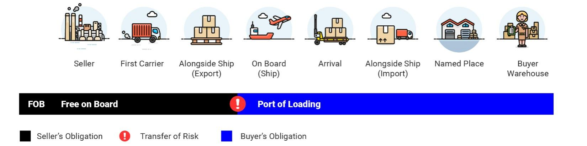
FOB (Free On Board) is an Incoterm that outlines the responsibilities of the seller and buyer for the transportation of goods by sea or inland waterway. Under FOB, the seller delivers the goods on board the ship at the port of shipment specified in the contract, and the risk is transferred to the buyer once the goods are loaded onto the vessel.
Seller's Responsibility
- Delivery on Board the Vessel: The seller is responsible for delivering the goods on board the ship at the port of shipment, which means the seller handles the cost and risk of getting the goods to the ship.
- Export Customs Clearance: The seller must complete the necessary documentation and formalities for export, including export duties and taxes.
- Cost to the Port of Shipment: The seller is responsible for all costs associated with delivering the goods to the vessel, including loading charges at the port.
Buyer's Responsibility
- Risk Transfer: The buyer assumes all risks once the goods are loaded on the ship. If the goods are damaged or lost after being placed on the vessel, the buyer bears the responsibility.
- Freight and Insurance: The buyer is responsible for the costs of transporting the goods from the port of shipment to the destination port. This includes the cost of freight and the purchase of insurance for the shipment.
- Import Customs Clearance: The buyer is responsible for paying the import duties and taxes upon arrival of the goods at the destination port.
- Cost from Port of Shipment: The buyer takes on any additional costs once the goods are on the ship, including unloading, transport to the final destination, and all importation costs.
Risk Transfer
Risk transfers from the seller to the buyer once the goods have been loaded onto the ship at the port of shipment. This means the buyer assumes responsibility for the goods from that point onward.
Key Points of FOB
- Delivery Point: The seller delivers the goods on board the ship at the agreed port of shipment.
- Risk Transfer: The risk is transferred to the buyer once the goods are loaded onto the vessel at the port of shipment. This is the main difference between FOB and earlier terms like FAS (Free Alongside Ship), where the risk transfers when goods are placed alongside the ship.
- Seller's Responsibility: The seller handles everything up to the point the goods are on board the ship, including export duties and loading.
- Buyer's Responsibility: The buyer assumes the risk and cost of the goods from the moment they are on board the ship, including sea transport, insurance, import customs clearance, and final delivery to the destination.
Example
If a seller in Shanghai is selling goods to a buyer in London under FOB Shanghai:
- The seller is responsible for getting the goods on board the ship at the Port of Shanghai, covering export duties and loading costs.
- Once the goods are loaded onto the ship, the buyer assumes all responsibility for the goods, including arranging for freight, insurance, paying import duties in London, and managing transportation from the port to the final destination.
Advantages of FOB
- Control for Buyer: The buyer has more control over the shipping process once the goods are on the vessel.
- Clear Risk Transfer: The point at which risk transfers is clear, helping both parties understand their responsibilities.
- Common for Sea Freight: FOB is widely used for sea freight, particularly for bulk goods and container shipments.
Important Note
FOB is only applicable for sea and inland waterway transport and is not used for air, road, or rail shipments.
Focus Term: CFR (COST & FREIGHT)
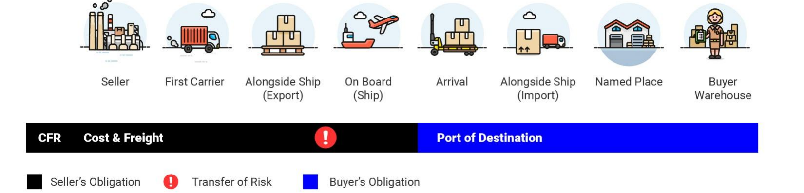
CFR (Cost and Freight) is an Incoterm used primarily for sea and inland waterway transport, where the seller is responsible for covering the costs and freight to bring the goods to the destination port. However, the risk of loss or damage to the goods transfers to the buyer once the goods are loaded on board the ship at the port of shipment.
Seller's Responsibility
- Cost and Freight to Destination Port: The seller is responsible for paying the costs and freight required to transport the goods to the port of destination.
- Loading and Shipping: The seller is responsible for loading the goods onto the ship at the port of departure and arranging for sea transport.
- Export Customs Clearance: The seller must complete all the necessary export formalities, such as export documentation, licenses, and export duties.
- Freight Charges: The seller pays for the freight charges to transport the goods to the agreed port of destination.
Buyer's Responsibility
- Risk Transfer: The buyer assumes all risk of loss or damage to the goods once the goods are loaded onto the vessel at the port of shipment.
- Insurance: Since the buyer assumes the risk once the goods are on board the vessel, it is advisable for the buyer to arrange insurance.
- Unloading and Import Duties: The buyer is responsible for unloading the goods, customs clearance, duties, taxes, and handling charges.
- Transport from Destination Port: The buyer is responsible for transportation from the destination port to the final delivery location.
Risk Transfer
The risk transfers from the seller to the buyer once the goods are loaded onto the ship at the port of shipment.
Despite the seller paying for the freight, the buyer assumes the risk during transport from the moment the goods are on the vessel.
Key Points of CFR
- Delivery Point: The seller delivers the goods to the port of shipment and pays freight to the destination port.
- Risk Transfer: Risk transfers once the goods are loaded onto the ship.
- Seller's Responsibility: Export duties, documentation, loading, and freight charges.
- Buyer's Responsibility: Insurance, unloading, customs duties, and final transport.
Example
If a seller in Hong Kong is selling goods to a buyer in New York under CFR Hong Kong:
- The seller will arrange and pay for transport of the goods to New York.
- Once loaded onto the vessel, the buyer assumes all risk.
- The buyer handles customs clearance, import duties, unloading, and final delivery.
Advantages of CFR
- Cost Control for the Buyer: The seller covers freight costs to the destination port.
- Clarity in Risk Transfer: Responsibilities are clearly defined between seller and buyer.
Important Note
CFR is only applicable for sea and inland waterway transport. It is not suitable for air, road, or rail transport.
Focus Term: CIF (COST, INSURANCE & FREIGHT)
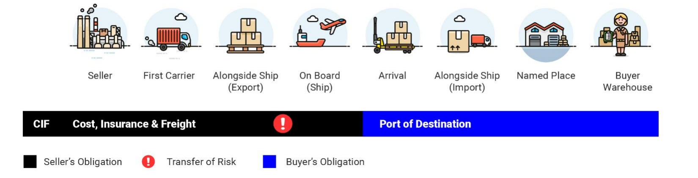
CIF (Cost, Insurance, and Freight) is an Incoterm used for international trade, primarily for sea and inland waterway transport. It is similar to CFR (Cost and Freight), with the key difference being that the seller is also responsible for insurance during the transportation of goods.
Seller's Responsibility
- Cost and Freight to Destination Port: The seller is responsible for paying for the cost of the goods and the freight to transport the goods to the port of destination.
- Insurance: The seller must arrange and pay for insurance to cover the goods while they are in transit.
- Export Customs Clearance: The seller is responsible for export customs procedures, documentation, and export duties.
- Loading and Shipping: The seller covers all costs and responsibilities up to the point the goods are loaded on the vessel.
Buyer's Responsibility
- Risk Transfer: The buyer assumes all risk once the goods are loaded onto the ship at the port of shipment.
- Unloading and Import Duties: The buyer is responsible for unloading, import customs clearance, duties, taxes, and destination charges.
- Transport from Destination Port: The buyer arranges transport from the destination port to the final location.
Risk Transfer
While the seller arranges and pays for the freight and insurance, the risk transfers from the seller to the buyer once the goods are loaded onto the ship at the port of shipment.
This means that even though the seller covers insurance, the buyer takes on the risk for any damage or loss during transport after the goods are loaded.
Key Points of CIF
- Delivery Point: The seller delivers the goods on board the ship and pays freight to the destination port.
- Insurance: The seller is required to purchase insurance for the goods during transit.
- Risk Transfer: Risk passes to the buyer once the goods are loaded onto the vessel.
- Seller's Responsibility: Cost of goods, freight, insurance, and export customs clearance.
- Buyer's Responsibility: Unloading, import duties, customs clearance, and final transportation.
Example
If a seller in Shanghai is selling goods to a buyer in Los Angeles under CIF Shanghai:
- The seller arranges and pays for freight and insurance to Los Angeles.
- The seller's responsibility ends once the goods are loaded onto the vessel in Shanghai.
- The buyer handles unloading, import customs clearance, and transportation to the final destination.
Advantages of CIF
- Insurance Coverage: The seller arranges insurance, providing protection during transit.
- Cost Predictability: The buyer knows the costs up to the destination port.
- Seller's Responsibility for Logistics: The seller manages most logistics before arrival.
Important Notes
- CIF is only used for sea and inland waterway transport.
- The buyer may purchase additional insurance if greater coverage is required.
- The buyer should verify that the seller's insurance coverage is adequate.
Focus Term: CPT (CARRIAGE PAID TO)
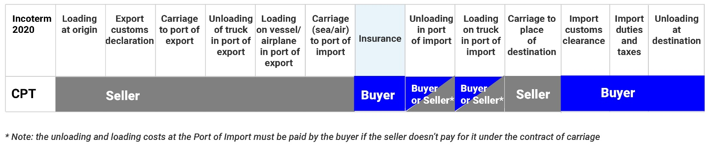
CPT (Carriage Paid To) is an Incoterm that specifies the responsibilities of the buyer and seller regarding the transportation of goods. Under CPT, the seller is responsible for paying the transport costs to bring the goods to a specified destination, but the risk transfers to the buyer once the goods are handed over to the first carrier.
Seller's Responsibility
- Transport Cost: The seller is responsible for paying the cost of transportation to the agreed destination.
- Delivery to the Carrier: The seller must deliver the goods to the first carrier at the point of departure or agreed location.
- Export Customs Clearance: The seller handles export formalities, licenses, and export duties.
- Risk During Transit: Although the seller pays for transportation, risk transfers to the buyer once the goods are handed over to the first carrier.
Buyer's Responsibility
- Risk Transfer: The buyer assumes all risk of loss or damage once the goods are handed over to the first carrier.
- Import Customs Clearance: The buyer handles import customs clearance, duties, and taxes.
- Further Transport: The buyer is responsible for unloading and transportation beyond the agreed destination point.
Risk Transfer
Risk transfers to the buyer as soon as the goods are handed over to the first carrier, not when the goods arrive at the destination.
Even though the seller covers the transportation cost, the buyer assumes the risk during transit.
Key Points of CPT
- Delivery Point: The seller delivers the goods to the first carrier at the agreed place.
- Risk Transfer: Risk transfers once the goods are handed over to the first carrier.
- Seller's Responsibility: Transport costs and export customs clearance.
- Buyer's Responsibility: Import duties, unloading, and further transportation.
Example
Let’s say a seller in Tokyo is selling goods to a buyer in New York under CPT New York:
- The seller arranges and pays for transportation from Tokyo to New York.
- Once the goods are handed over to the first carrier in Tokyo, risk passes to the buyer.
- The buyer handles import customs duties and further transportation.
Advantages of CPT
- Seller Handles Logistics: The seller arranges and pays for transportation.
- Flexibility in Transport Mode: CPT can be used for sea, air, rail, or road transport.
- Buyer Has Control Over Insurance: The buyer can arrange insurance coverage during transit.
Important Notes
- CPT can be used for any mode of transport.
- The buyer should be aware that risk transfers once goods are handed over to the first carrier.
- The buyer may want to secure insurance during transit.
Focus Term: CIP (CARRIAGE AND INSURANCE PAID TO)
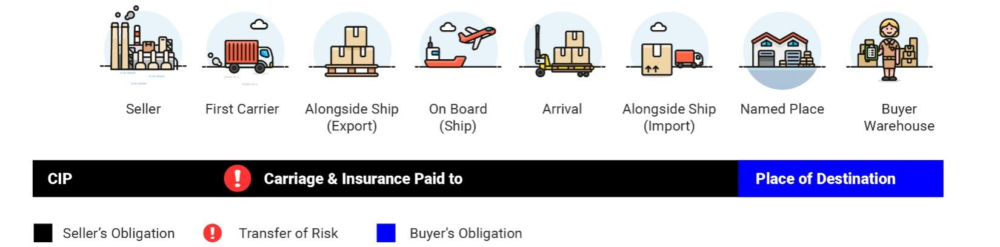
CIP (Carriage and Insurance Paid To) is an Incoterm that requires the seller to arrange and pay for the transportation of goods to a specified destination, just like CPT (Carriage Paid To). However, in CIP, the seller is also responsible for purchasing insurance to cover the goods during transit. This makes CIP a more comprehensive term than CPT because it includes both the cost of transportation and insurance.
Seller's Responsibility
- Transportation Costs: The seller pays the cost of transporting the goods to the agreed destination.
- Insurance: The seller must arrange insurance covering at least 110% of the value of the goods.
- Export Customs Clearance: The seller handles export documentation, licenses, and export duties.
- Delivery to the Carrier: The seller delivers the goods to the first carrier for transportation.
Buyer's Responsibility
- Risk Transfer: The buyer assumes risk once the goods are handed over to the first carrier.
- Import Customs Clearance: The buyer handles import duties, taxes, and documentation.
- Unloading & Further Transport: The buyer is responsible for unloading and transportation to the final destination.
Risk Transfer
The risk transfers from the seller to the buyer once the goods are delivered to the first carrier, not when the goods arrive at the destination.
Although the seller pays for transportation and insurance, the buyer assumes the risk during the transport journey after the goods are handed over to the carrier.
Key Points of CIP
- Delivery Point: The seller delivers the goods to the first carrier.
- Insurance: The seller must arrange insurance covering the goods during transport.
- Risk Transfer: Risk passes to the buyer once the goods are handed over to the carrier.
- Seller’s Responsibility: Transportation, insurance, export customs clearance, and delivery to the carrier.
- Buyer’s Responsibility: Import clearance, duties, taxes, and further transportation.
Example
Imagine a seller in Frankfurt is selling goods to a buyer in Melbourne under CIP Melbourne:
- The seller arranges and pays for transportation from Frankfurt to Melbourne.
- The seller purchases insurance for the goods during transit.
- Once the goods are handed over to the first carrier in Frankfurt, risk transfers to the buyer.
- The buyer handles import duties, taxes, customs clearance, and final delivery.
Advantages of CIP
- Insurance Coverage: The seller provides insurance protection during transit.
- Seller Takes Care of Logistics: The seller handles most transport arrangements.
- Flexibility: CIP can be used for sea, air, road, rail, and multimodal transport.
Important Notes
- CIP is applicable for all modes of transport.
- It is suitable for multimodal transport involving multiple transport methods.
- The buyer should verify whether the insurance coverage provided by the seller is sufficient.
- Additional insurance may be purchased if greater protection is required.
Focus Term: DAP (DELIVERED AT PLACE)
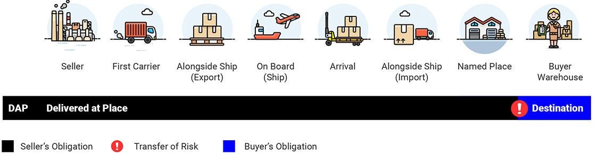
DAP (Delivered at Place) is an Incoterm in which the seller is responsible for delivering the goods to a specified location in the buyer’s country. The seller takes responsibility for transportation costs, handling, and risks until the goods arrive at the agreed destination. However, the seller is not responsible for import customs duties or taxes.
Seller's Responsibility
- Transportation Costs: The seller arranges and pays for transportation to the agreed destination.
- Risk Until Delivery: The seller bears all risks until the goods are delivered to the specified place.
- Delivery to Agreed Place: The seller ensures the goods arrive at the agreed location ready for unloading.
- Export Customs Clearance: The seller completes export customs procedures and pays export duties if applicable.
Buyer's Responsibility
- Import Customs Clearance: The buyer handles import documentation, duties, and taxes.
- Unloading Costs: The buyer pays for unloading the goods at the destination.
- Risk After Delivery: The buyer assumes risk once the goods are made available for unloading.
Risk Transfer
Risk transfers from the seller to the buyer when the goods are delivered to the agreed destination and made available for unloading.
Unlike FOB, CFR, or CIF, risk does not transfer at the port of shipment but at the final agreed delivery location.
Key Points of DAP
- Delivery Point: Goods are delivered to a specific location in the buyer's country.
- Risk Transfer: Risk transfers when goods are available for unloading.
- Seller’s Responsibility: Transportation, handling, risk, and export customs clearance.
- Buyer’s Responsibility: Import duties, customs clearance, and unloading.
Example
Let’s say a seller in Berlin is selling goods to a buyer in New York under DAP New York:
- The seller arranges and pays for transportation from Berlin to New York.
- The seller handles export customs clearance in Germany.
- The seller delivers the goods to the agreed location in New York.
- Once delivered and ready for unloading, risk transfers to the buyer.
- The buyer pays import duties, taxes, and unloading costs.
Advantages of DAP
- Seller Handles Logistics: The seller manages most transportation activities.
- Clear Delivery Point: The buyer knows exactly where the goods will arrive.
- Flexible: DAP can be used for sea, air, rail, road, and multimodal transport.
Important Notes
- DAP can be used for any mode of transport.
- The buyer must handle import customs clearance and associated charges.
- The seller's responsibility ends once goods are available for unloading.
- The seller does not pay import duties, taxes, or unloading costs.
Focus Term: DPU (DELIVERED AT PLACE UNLOADED)
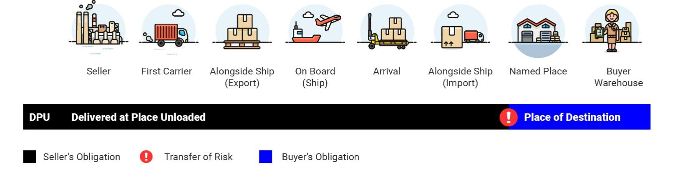
DPU (Delivered at Place Unloaded) is an Incoterm where the seller is responsible for delivering the goods to a specified destination and unloading them. The seller assumes all costs, risks, and responsibilities related to transportation and unloading until the goods arrive at the agreed location, ready for the buyer to receive.
Seller’s Responsibility
- Transport Costs: The seller arranges and pays for transportation to the agreed destination.
- Unloading: The seller is responsible for unloading the goods at the agreed destination.
- Risk Until Delivery: The seller bears all risks during transport and unloading.
- Export Customs Clearance: The seller completes export customs procedures and pays export duties if applicable.
- Delivery to Agreed Destination: The seller delivers the goods unloaded at the specified location.
Buyer’s Responsibility
- Import Customs Clearance: The buyer handles import duties, taxes, and customs documentation.
- Further Transport Costs: The buyer is responsible for any transportation beyond the delivery point.
- Risk After Delivery: Risk transfers once the goods have been unloaded at the agreed location.
Risk Transfer
Risk transfers from the seller to the buyer only after the goods have been unloaded at the agreed destination.
This makes DPU unique because it is the only Incoterm where the seller is responsible for unloading the goods at the destination.
Key Points of DPU
- Delivery Point: Goods are delivered and unloaded at the agreed destination.
- Unloading: The seller handles unloading, unlike DAP.
- Risk Transfer: Risk transfers after unloading is completed.
- Seller’s Responsibility: Transportation, unloading, export clearance, and transit risks.
- Buyer’s Responsibility: Import clearance, duties, taxes, and further transport.
Example
Let’s say a seller in Tokyo is selling goods to a buyer in Toronto under DPU Toronto:
- The seller arranges and pays for transportation from Tokyo to Toronto.
- The seller unloads the goods at the agreed destination in Toronto.
- After unloading, risk transfers to the buyer.
- The buyer handles import customs clearance and any further transportation.
Advantages of DPU
- Seller Handles Unloading: The buyer does not need to arrange unloading.
- Clear Delivery Point: The goods are delivered and unloaded at a specific location.
- Convenience: The seller manages most logistics until delivery is complete.
Important Notes
- DPU is the only Incoterm where the seller is responsible for unloading.
- DPU can be used for all transport modes, including multimodal transport.
- The buyer remains responsible for import customs clearance and duties.
- The seller covers transportation and unloading up to the agreed destination.
11. DDP (Delivered Duty Paid)
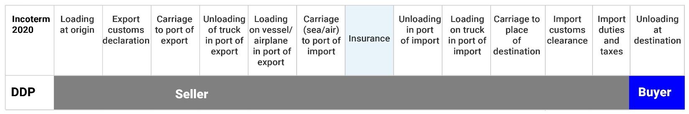
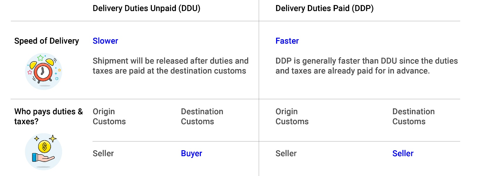
Definition
DDP (Delivered Duty Paid) is one of the most seller-friendly Incoterms. Under DDP, the seller assumes full responsibility for delivering the goods to a specified destination in the buyer's country, including paying for transportation, insurance, import duties, and taxes.
The seller is also responsible for handling export and import customs clearance, making this term particularly advantageous for the buyer, who has minimal responsibility and risk.
Seller’s Responsibility
- Transportation Costs to the final destination.
- Import Customs Clearance and payment of duties & taxes.
- Export Customs Clearance and export documentation.
- Optional Insurance during transit.
- Assumes all risks until delivery.
Buyer’s Responsibility
- Receive the goods at the agreed destination.
- Perform final unloading if required.
- Assume risk only after delivery.
Risk Transfer
The risk transfers from the seller to the buyer only when the goods are delivered to the agreed destination and made available for unloading. This makes DDP one of the most comprehensive terms for the seller, as the seller retains responsibility throughout the entire journey.
Key Points of DDP
- Seller’s Comprehensive Responsibility: The seller handles transportation, customs clearance, duties, taxes, and risk management up to final delivery.
- Buyer’s Limited Responsibility: The buyer mainly receives and unloads the goods.
- Delivery Point: Goods are delivered to the agreed location in the buyer’s country.
- Full Delivery: The seller covers logistics, customs, duties, and taxes until final destination.
Example
Imagine a seller in London is selling goods to a buyer in Tokyo under DDP Tokyo:
- The seller arranges and pays for transportation from London to Tokyo.
- The seller handles export and import customs clearance, duties, and taxes.
- Once the goods arrive in Tokyo and are available for unloading, the buyer takes possession.
Advantages of DDP
- Convenience for the Buyer: The seller manages the entire logistics process.
- Seller Has Full Control: Complete oversight of shipping and customs procedures.
- Predictable Costs: Transportation, duties, and taxes are included.
Important Notes
- DDP is suitable for all transport modes and multimodal transport.
- The seller assumes risk throughout the journey until delivery.
- The buyer is generally responsible for unloading.
- DDP is ideal for buyers seeking a hassle-free delivery experience.
In summary, DDP is ideal for buyers who want a hassle-free delivery experience, as the seller is responsible for everything, from shipping and customs clearance to taxes and duties, up until the goods are delivered and unloaded at the buyer’s specified location.